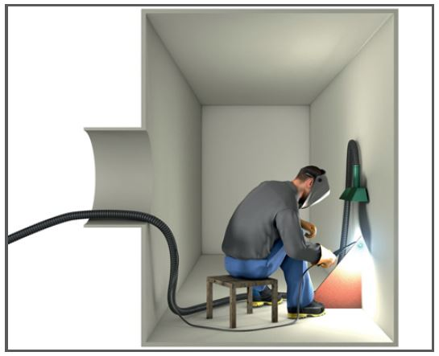
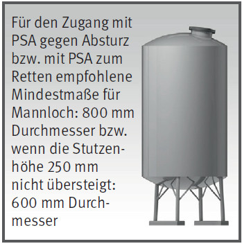

Gefährdungen
- Wegen unzureichender Belüftung
kann es durch Gefahrstoffe
zu Gesundheitsschäden oder explosionsfähiger
Atmosphäre
kommen.
- Wegen beengter Verhältnisse
in einer leitfähigen Umgebung
besteht die erhöhte Gefährdung
einen elektrischen Stromschlag
zu erhalten.
Allgemeines
- Enge Räume können Kessel, Brennkammern, Rauchgaskanäle, Wärmetauscher, Schmelzöfen, Behälter, Silos, Rohrleitungen, Schächte, Gräben, Baugruben usw. sein.
- Vor Arbeiten in engen Räumen
die dort möglichen Gefährdungen ermitteln und beurteilen.
- Benennung eines verantwortlichen Aufsichtführenden.
- Benennung eines zuverlässigen Sicherungspostens, der mit den Beschäftigten in Kontakt steht z. B. Sichtverbindung, Sprechverbindung, Signalleine und der jederzeit, ohne seinen Posten zu verlassen, Hilfe herbeiholen kann.
- Erlaubnisschein mit festgelegten Schutzmaßnahmen vom Betreiber einholen.
- Arbeiten erst beginnen, wenn
die schriftlich festgelegten
Schutzmaßnahmen getroffen
und die Beschäftigten unterwiesen sind.
Schutzmaßnahmen
- Durch Messungen prüfen, ob bei Vorhandensein von Gefahrstoffen die Arbeitsplatzgrenzwerte eingehalten werden.
- Falls Grenzwerte nicht eingehalten werden können, Räume entleeren und reinigen bzw. gasfrei machen und ggf. abtrennen.
- Bei Infektionsgefährdungen durch biologische Stoffe Räume sterilisieren oder desinfizieren. Ist dies nicht möglich, geeignete persönliche Schutzausrüstung benutzen.
- Raume ausreichend mit Frischluft lüften ggf. technische Lüftung vorsehen.
- Isoliergeräte als Atemschutz verwenden, wenn der Sauerstoffgehalt von mind. 19 Vol % durch Be- und Entlüftungsmaßnahmen nicht sichergestellt werden kann.
- Heiz- und Kühleinrichtungen, Kälteanlagen vor Beginn der Arbeiten außer Betrieb setzen und gegen Wiedereinschalten sichern.
- Besteht die Gefahr des Versinkens oder Verschüttetwerdens, Arbeiten von einer festen Arbeitsbühne ausführen oder eine Siloeinfahreinrichtung benutzen.
- Das Auftreten einer gefährlichen explosionsfähigen Atmosphäre vermeiden. Ist dies nicht möglich, Zündquellen vermeiden und Arbeiten nur von besonders unterwiesenen Personen und nur mit Betriebsmitteln, Werkzeugen und PSA durchführen, die für den Einsatz in der vorliegenden Zone geeignet sind.
- Explosionsschutzdokument erstellen.
- Schweißarbeiten nicht in explosionsfähiger Atmosphäre durchführen.
- Anbackungen und Verbrennungsrückstände vor Arbeitsbeginn entfernen.
Zugangsverfahren
- Die Auswahl der Zugangsverfahren hängt ab von:
- der Gestaltung der Zugangsöffnungen (Größe, Lage, Erreichbarkeit),
- den Rettungsmöglichkeiten (Behinderung durch Einbauten),
- der Bauart der Behälter, Silos oder engen Räume (Höhe, Tiefe, Geometrie).
- Größe und Anordnung von Zugangsöffnungen müssen das Ein- und Aussteigen und die schnelle Rettung von Beschäftigten ermöglichen.
- Geeignete Einfahreinrichtungen wie Arbeitssitze, -körbe, -bühnen oder Siloeinfahreinrichtungen benutzen. Auffanggurte als Personenaufnahmemittel sind nur dann zulässig, wenn sichergestellt ist, dass die Dauer des Hubvorgangs nach oben 5 Minuten nicht übersteigt.
Beispiel: Tank mit schrägem Mannloch

Notfall- und Rettungsverfahren
- Geeignete Ausrüstung zur
Rettung und ggf. zur Brandbekämpfung bereithalten.
- Beschäftigte, insbesondere
die Sicherungsposten unterweisen und Rettungsverfahren praktisch üben.
- Alarm- und Rettungsplan aufstellen.
Elektro- und Schutzgasschweißen
- Wegen erhöhter elektrischer Gefährdung* nur für derartige Arbeiten geeignete und besonders gekennzeichnete Schweißstromquellen benutzen.
- Isolierende Zwischenlagen (Gummimatten, Holzroste u. a.) verwenden.
- Schwer entflammbare und trockene Kleidung sowie unbeschädigte Sicherheitsschuhe tragen.
- Schweißstromquellen nicht in engen Räumen aufstellen.
Gasschweiß-, Brennschneid- und Hartlötarbeiten
- Brenngas- und Sauerstoffflaschen nicht in engen Räumen aufstellen.
- Bei längeren Arbeitsunterbrechungen Brenner und Schläuche aus den Räumen entfernen.
- Schwer entflammbare Schutzkleidung tragen.
Räume des Feuerfestbaues
- In Behältern und engen Räumen
des Feuerfestbaues ist es unzulässig,
- gefährliche Zubereitungen
herzustellen, soweit dies nicht
arbeitstechnisch erforderlich ist,
- Reinigungsarbeiten mit brennbaren
Flüssigkeiten (z. B. Lösemitteln)
auszuführen,
- Innenwände oder Einbauten
so stark zu erwärmen, dass
dadurch gesundheitsgefährliche
Zersetzungsprodukte
entstehen können, Druckgasbehälter,
ausgenommen
Feuerlöscher und Atemschutzgeräte,
mit hineinzunehmen,
zu rauchen und offenes Licht
zu verwenden.
Arbeiten mit elektrischen Betriebsmitteln in Bereichen mit erhöhter elektrischer Gefährdung*
- In Räumen/Bereichen mit leitfähiger Umgebung und zusätzlich begrenzter Bewegungsfreiheit ortsveränderliche elektrische Betriebsmittel nur mit der Schutzmaßnahme
- Schutzkleinspannung SELV (nur Betriebsmittel der Schutzklasse III anschließen) oder
- Schutztrennung betreiben (pro Trenntransformator nur einen Verbraucher anschließen, bei Betriebsmitteln der Schutzklasse I Potentialausgleich mit der leitfähigen Umgebung herstellen).
- Ortsveränderliche Stromerzeuger, Trenntransformatoren und Baustromverteiler grundsätzlich außerhalb des Raumes/Bereichs mit leitfähiger Umgebung aufstellen.
- Ist dies aus technischen Gründen nicht möglich, z. B. bei sehr langen Rohrleitungen, Kastenträgern usw., darf im Einzelfall die Stromquelle innerhalb des leitfähigen Bereiches mit begrenzter Bewegungsfreiheit aufgestellt werden, wenn die Zuleitung
- geschützt verlegt und vom Typ H07RN-F oder mindestens gleichwertiger Bauart ist und
- über eine stationäre RCD mit IΔN 30mA betrieben wird.
* Eine erhöhte elektrische Gefährdung liegt vor, wenn elektrische Betriebsmittel in Bereichen betrieben werden, deren Begrenzung und Einbauten leitfähig sind (Widerstand < 50 kΩ) und diese Flächen großflächig z. B. durch Zwangshaltung berührt werden können. Für die Auswahl der Schutzmaßnahmen ist weiterhin die Bewegungsfreiheit (begrenzt oder ausreichend) in der leitfähigen Umgebung entscheidend.
Schutzklasseneinteilung der Elektrowerkzeuge
| Schutzklasse I – Schutzleitersystem |
| Schutzklasse II – schutzisoliert |
| Schutzklasse III – Schutzkleinspannung |
Arbeitsmedizinische Vorsorge
- Arbeitsmedizinische Vorsorge
nach Ergebnis der Gefährdungsbeurteilung
veranlassen (Pflichtvorsorge)
oder anbieten (Angebotsvorsorge).
Hierzu Beratung
durch den Betriebsarzt.
07/2021